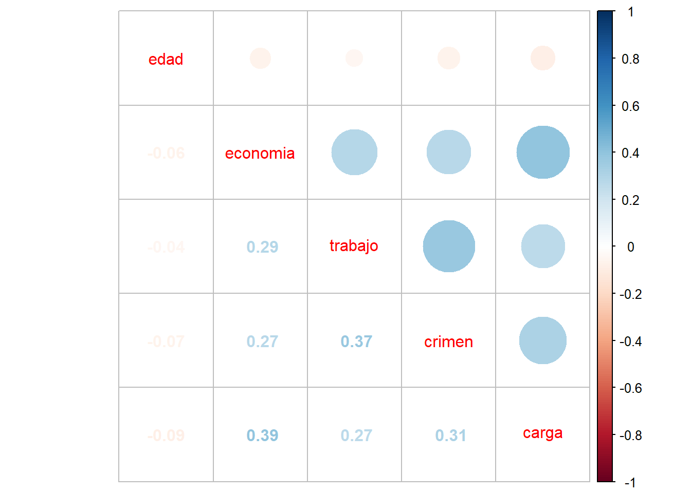

#Proyecto de investigación en base a Latinobarómetro-2023.
#install.packages("weatherData", repos = "http://cran.us.r-project.org")
#install.packages("pacman", repos = "http://cran.us.r-project.org")
pacman::p_load(sjlabelled,
dplyr, #Manipulacion de datos
stargazer, #Tablas
sjmisc, # Tablas
summarytools, # Tablas
kableExtra, #Tablas
sjPlot, #Tablas y gráficos
corrplot, # Correlaciones
sessioninfo, # Información de la sesión de trabajo
ggplot2)
rm(list=ls())
options(scipen=999)
#Cargar BBDD.
Latinobarometro_2023 <- load("C:/Users/Acer/OneDrive - Universidad Alberto Hurtado/Escritorio/R studio y complementos/Trabajo2_OFCRGIT/input/Latinobarometro_2023_Esp_Rdata_v1_0.rdata")Percepciones sobre el fenómeno migratorio en Chile
Percepciones sobre el fenómeno migratorio en Chile.
En las últimas décadas, se ha observado un incremento notable en las olas migratorias en diversas regiones del mundo . En América Latina, este fenómeno ha sido influenciado en gran medida por crisis políticas y recesiones económicas, que han motivado movimientos internacionales de personas en busca de mejores oportunidades de vida. Nairbis Desirée Sibrian Díaz, Neida Josefina Colmenares Mejías, and Juan Carlos Núñez Silva (2023)
En eundefinedste contexto, Chile ha destacado como un destino atractivo para la migración. La relativa estabilidad política y el crecimiento económico han generado un entorno propicio para la llegada de migrantes en busca de mejores condiciones de vida y oportunidades laborales. Navarrete Yáñez (2017) Sin embargo, la masividad de las olas migratorias provenientes de países con índices de pobreza elevados, han desencadenado una serie de episodios violentos y xenófobos como respuesta. Constanza Ambiado Cortés et al. (2012)
Si bien hasta el 2017 no existían grandes políticas migratorias, durante el 2024 se han desarrollado las Políticas Nacional de Migración y Extranjería (PNME) que permite establecer regulaciones ante los flujos migratorios con enfoques de género, derechos humanos, derechos de la niñez, etc. que han permitido reconocer tanto los factores que conlleva este fenómeno, como el derecho a migrar.
Más allá de las cifras, la percepción de quienes conviven con este fenómeno tiende a ser mucho más compleja y dinámica que los datos empíricos, pues enmascaran realidades interseccionadas por clase social, género, edades, raza, etc. Villarraga Orjuela et al. (2015)
Bajo este contexto, el objetivo de este estudio es enfocarnos en explorar la percepción que tienen los chilenos sobre los inmigrantes y las posibles repercusiones en la realidad social compartida. Donde estableceremos como hipótesis que la percepción sobre la inmigración en Chile varía significativamente según la edad y el sexo de los individuos, con una mayor aceptación y apertura hacia la migración entre las personas más jóvenes y las mujeres. Constanza Ambiado Cortés et al. (2012) A medida que la sociedad chilena experimenta una mayor diversidad cultural debido a la migración, las actitudes hacia los inmigrantes podrían estar influenciadas tanto por factores generacionales como de género.
Para esto, la metodología se basará en el uso de fuentes de información de tipo secundaria, es decir, a partir de los datos de la encuesta Latinobarómetro 2023, extraemos las variables necesarias para responder nuestro objetivo y responder la hipótesis antes planteada.
Nota sobre recodificación de variables:
A la hora de recodificar las categorías de respuestas, me percaté que las preguntas seleccionadas no estaban en el mismo sentido, es decir, algunas preguntaban de forma negativa “los inmigrantes vienen a competir por nuestros puestos de trabajo”, mientras que otras en forma positiva “Los inmigrantes son buenos para la economía del país”. Por esto, se recodificaron de forma ascendente sólo las preguntas en positivo (1. perjudicial y 4. beneficioso). Para que las respuestas de las preguntas en sentido negativo (1.muy de acuerdo y 4. muy desacuerdo) calzáran de la misma forma, para que así, podamos entender que a modo general, todas las respuestas van a significar que 1. es una percepción perjudicial y 4. es una percepción relacionada a la sensación de beneficio para el país.
Procesamiento de variables.
proc_data <- Latinobarometro_2023_Esp_v1_0 %>% select(P32INN, P33N.A, P33ST.B, # competir laboralmente P33N.C, # aumento del crimen P33N.D,# carga Estatal sexo,# sexo edad,# edad idenpa) # pais # Comprobar names(proc_data)[1] "P32INN" "P33N.A" "P33ST.B" "P33N.C" "P33N.D" "sexo" "edad" [8] "idenpa"proc_data <- proc_data %>% dplyr::filter(idenpa==152) #recodificamos. proc_data$P32INN <- car::recode(proc_data$P32INN, "c(-5)=NA") proc_data$P33N.A <- car::recode(proc_data$P33N.A, "c(-5)=NA") proc_data$P33ST.B <- car::recode(proc_data$P33ST.B, "c(-5)=NA") proc_data$P33N.C <- car::recode(proc_data$P33N.C, "c(-5)=NA") proc_data$P33N.D <- car::recode(proc_data$P33N.D, "c(-5)=NA")#reordenar categorias. proc_data$P32INN <- car::recode(proc_data$P32INN, "1=3; 2=2; 3=1; 4=0") proc_data$P33N.A <- car::recode(proc_data$P33N.A, "1=3; 2=2; 3=1; 4=0") proc_data$P33ST.B <- car::recode(proc_data$P33ST.B, "1=1; 2=2; 3=3; 4=0") proc_data$P33N.C <- car::recode(proc_data$P33N.C, "1=1; 2=2; 3=3; 4=0") proc_data$P33N.D <- car::recode(proc_data$P33N.D, "1=3; 2=2; 3=1; 4=0") #etiqueta. proc_data <- proc_data %>% rename("impacto_inmg"=P32INN, "impacto_econom"=P33N.A, "impacto_laboral"=P33ST.B, "impacto_crimen"=P33N.C, "impacto_cultural"=P33N.D)proc_data$impacto_inmg <- set_label(x = proc_data$impacto_inmg,label = "impacto:inmigracion") get_label(proc_data$impacto_inmg)[1] "impacto:inmigracion"proc_data$impacto_econom <- set_label(x = proc_data$impacto_econom,label = "impacto:economia") get_label(proc_data$impacto_econom)[1] "impacto:economia"proc_data$impacto_crimen <- set_label(x = proc_data$impacto_crimen,label = "impacto:crimen") get_label(proc_data$impacto_crimen)[1] "impacto:crimen"proc_data$impacto_laboral <- set_label(x = proc_data$impacto_laboral,label = "impacto:laboral") get_label(proc_data$impacto_laboral)[1] "impacto:laboral"proc_data$impacto_cultural <- set_label(x = proc_data$impacto_cultural,label = "impacto:Cultura") get_label(proc_data$impacto_cultural)[1] "impacto:Cultura"#Crear variable como suma de items. proc_data$percep_inmg <- (proc_data$impacto_inmg+proc_data$impacto_econom+proc_data$impacto_laboral+proc_data$impacto_crimen+proc_data$impacto_cultural) summary(proc_data$percep_inmg)Min. 1st Qu. Median Mean 3rd Qu. Max. NA's 2.000 6.000 8.000 7.811 9.000 14.000 108#etiqueta variable nueva. proc_data$percep_inmg <- set_label(x = proc_data$percep_inmg, label = "percepcion de inmigracion") #recodificación categorías. proc_data$impacto_inmg <- set_labels(proc_data$impacto_inmg, labels=c( "Ninguna"=0, "perjudicial"=1, "ni perjudica ni beneficia"=2, "beneficioso"=3)) proc_data$impacto_econom <- set_labels(proc_data$impacto_econom, labels=c( "Ninguna"=0, "perjudicial"=1, "ni perjudica ni beneficia"=2, "beneficioso"=3)) proc_data$impacto_laboral <- set_labels(proc_data$impacto_laboral, labels=c( "Ninguna"=0, "perjudicial"=1, "ni perjudica ni beneficia"=2, "beneficioso"=3)) proc_data$impacto_crimen <- set_labels(proc_data$impacto_crimen, labels=c( "Ninguna"=0, "perjudicial"=1, "ni perjudica ni beneficia"=2, "beneficioso"=3)) proc_data$impacto_cultural <- set_labels(proc_data$impacto_cultural, labels=c( "Ninguna"=0, "perjudicial"=1, "ni perjudica ni beneficia"=2, "beneficioso"=3)) #variable sexo. proc_data$sexo <- car::recode(proc_data$sexo, "1=0;2=1") proc_data$sexo <- factor(proc_data$sexo, labels=c( "Hombre", "Mujer"), levels=c(0,1)) get_label(proc_data$sexo)NULLproc_data$sexo <- set_label(x = proc_data$sexo,label = "Sexo") frq(proc_data$sexo)Sexo (x) <categorical> # total N=1200 valid N=1200 mean=1.53 sd=0.50 Value | N | Raw % | Valid % | Cum. % --------------------------------------- Hombre | 563 | 46.92 | 46.92 | 46.92 Mujer | 637 | 53.08 | 53.08 | 100.00 <NA> | 0 | 0.00 | <NA> | <NA>#Revisamos edad. get_label(proc_data$edad)NULLproc_data$edad <- set_label(x = proc_data$edad,label = "Edad")
proc_data %>% dplyr::group_by(sexo) %>% summarise(mean(percep_inmg, na.rm=TRUE))# A tibble: 2 × 2
sexo `mean(percep_inmg, na.rm = TRUE)`
<fct> <dbl>
1 Hombre 7.80
2 Mujer 7.82library(sjPlot)
sjt.xtab(proc_data$sexo, proc_data$percep_inmg, encoding = "UTF-8")| Sexo | percepcion de inmigracion |
Total | ||||||||||||
|---|---|---|---|---|---|---|---|---|---|---|---|---|---|---|
| 2 | 3 | 4 | 5 | 6 | 7 | 8 | 9 | 10 | 11 | 12 | 13 | 14 | ||
| Hombre | 1 | 10 | 48 | 38 | 60 | 69 | 87 | 86 | 43 | 37 | 16 | 18 | 2 | 515 |
| Mujer | 2 | 7 | 41 | 56 | 59 | 87 | 96 | 97 | 62 | 37 | 21 | 8 | 4 | 577 |
| Total | 3 | 17 | 89 | 94 | 119 | 156 | 183 | 183 | 105 | 74 | 37 | 26 | 6 | 1092 |
| χ2=13.198 · df=12 · Cramer's V=0.110 · Fisher's p=0.366 | ||||||||||||||
A partir del procesamiento de la base de datos, se construyó la variable “Percepción de inmigración” segmentada en primera instancia, por el sexo. Como vemos, existe un aumento de casos en las categorías 10 y 11,donde si bien no hay mayor distincion entre sexos, se ve que las mujeres perciben de manera mas positiva la inmigración en Chile. Sin embargo, esto puede deberse a que representan un mayor número de casos.
Análisis descriptivo de las variables para el fenómeno de percepción migratoria.
view(dfSummary(proc_data, headings=FALSE))Switching method to 'browser'Output file written: C:\Users\Acer\AppData\Local\Temp\RtmpWO2V0t\file1ea01ea246c9.html- Podemos apreciar que, si bien los encuestados perciben de manera mas beneficiosa la llegada de inmigrantes (impacto_inmg), reconocen que este fenómeno les hace sentir que tiene mayores repercusiones negativas en la economía (impacto_econom) y perciben de manera negativa o perjudicial (en menor nivel) que la inmigración causan aumento en el crimen (impacto_crimen)y la cultura que ellos enmascaran (impacto_cultural).
graph1 <- proc_data %>% ggplot(aes(x = percep_inmg)) +
geom_bar(fill = "purple")+
labs(title = "Percepción sobre inmigración",
x = "Percepción de inmigracion",
y = "Frecuencia") +
theme_bw()
graph1Warning: Removed 108 rows containing non-finite outside the scale range
(`stat_count()`).#Tabla de contingencia.
sjt.xtab(proc_data$percep_inmg, proc_data$sexo,
show.col.prc=TRUE,
show.summary=FALSE,
encoding = "UTF-8")| percepcion de inmigracion |
Sexo | Total | |
| Hombre | Mujer | ||
| 2 | 1 0.2 % |
2 0.3 % |
3 0.3 % |
| 3 | 10 1.9 % |
7 1.2 % |
17 1.6 % |
| 4 | 48 9.3 % |
41 7.1 % |
89 8.2 % |
| 5 | 38 7.4 % |
56 9.7 % |
94 8.6 % |
| 6 | 60 11.7 % |
59 10.2 % |
119 10.9 % |
| 7 | 69 13.4 % |
87 15.1 % |
156 14.3 % |
| 8 | 87 16.9 % |
96 16.6 % |
183 16.8 % |
| 9 | 86 16.7 % |
97 16.8 % |
183 16.8 % |
| 10 | 43 8.3 % |
62 10.7 % |
105 9.6 % |
| 11 | 37 7.2 % |
37 6.4 % |
74 6.8 % |
| 12 | 16 3.1 % |
21 3.6 % |
37 3.4 % |
| 13 | 18 3.5 % |
8 1.4 % |
26 2.4 % |
| 14 | 2 0.4 % |
4 0.7 % |
6 0.5 % |
| Total | 515 100 % |
577 100 % |
1092 100 % |
En el gráfico expuesto, podemos apreciar nuevamente que la mayor frecuencia se da entre 9 y 11 aprox, esto es, la mayor tasa de respuesta se da en una percepción mas bien positiva, donde se reconoce en general, que la inmigración puede ser más beneficiosa que perjudicial, pues se establecen porcentajes por sobre el 25%. mientras que en las categorías más extremas, no supera el 1%.
Percepción sobre inmigración de acuerdo a temáticas y segmentación por Sexo.
proc_data %>%
select(percep_inmg,sexo) %>%
dplyr::group_by(sexo=sjlabelled::as_label(sexo)) %>%
dplyr::summarise(Obs.=n(),Promedio=mean(percep_inmg),SD=sd(percep_inmg)) %>%
kable(., format = "markdown")| sexo | Obs. | Promedio | SD |
|---|---|---|---|
| Hombre | 563 | NA | NA |
| Mujer | 637 | NA | NA |
#Gráfico 2.
graph2 <- sjPlot::plot_stackfrq(dplyr::select(proc_data, impacto_inmg,
impacto_econom,
impacto_laboral,
impacto_crimen,
impacto_cultural),
title = "Percpeción sobre inmigración") +
theme(legend.position="bottom")
graph2#Revisamos más a fondo la dimensión Sexo.
graph3 <- proc_data %>% ggplot(aes(x = percep_inmg, fill = sexo)) +
geom_bar() +
xlab("Percepción sobre inmigración") +
ylab("Cantidad") +
labs(fill="Sexo")+
scale_fill_discrete(labels = c('Hombre','Mujer'))
graph3Warning: Removed 108 rows containing non-finite outside the scale range
(`stat_count()`).Sobre temáticas asociadas a la inmigración:
A partir del gráfico 2, podemos apreciar que:
- A grandes rasgos, los encuestados exponen que ellos y sus familias perciben de manera mas beneficiosa que perjudicial la inmigración (61.9%)
- Los encuestados tienen una percepción mas negativa sobre la inmigración por el impacto cultural que ellos generan en Chile, así como el impato negativo que perciben en la economía.
- En base a la temática laboral y en materia de delito/criminal. Si bien los encuestados no ven que los inmigrantes vengan a competir por puestos de trabajo (40.9%), esta cifra está muy cercana a la cantidad de personas que expone que esto ni beneficia ni perjudica (40.2%).
Entonces, la inmigración en sí la encuentran beneficiosa, que tienen una percepción sobre la inmigración de maera más positiva, se reconoce que existen impactos negativos en el país en materia económica y criminal, es en estás temáticas donde los encuestados se ven más amenazados o perjudicados por el fenómeno inmigratorio.
Segmentación por Sexo.
- A partir del gráfico 3, podemos ver que, efectivamente las mujeres representan la mayor tasa de respuesta a la hora de explicitar una percepción positiva/beneficiosa de la inmigración. Sin embargo, si recordamos los datos antes expuestos, tenemos que existe mayor porcentaje de mujeres en la muestra. Por ende, en base a esto, podríamos establecer que las respuestas no tienen mayor diferencia entre sexos y que la percepción sobre la inmigración es un fenómeno que se percibe de formas similares entre los encuestados.
– ENTREGA 3–
Asociación de variables.
a) Preparación de datos.
Para esta parte cargaremos nuevos paquetes que nos perimitirán generar tablas y visualización de correlaciones.
#Preparación de datos -Correlciones-.
Latinobarometro_2023 <- load("C:/Users/Acer/OneDrive - Universidad Alberto Hurtado/Escritorio/R studio y complementos/Trabajo2_OFCRGIT/input/Latinobarometro_2023_Esp_Rdata_v1_0.rdata")
pacman::p_load(dplyr, # Manipulacion datos
sjmisc, # Descriptivos
sjPlot, # Tablas
sjlabelled, #etiquetas
kableExtra, #Tablas
GGally, # Correlaciones
corrplot) # Correlaciones
proc_baro <- Latinobarometro_2023_Esp_v1_0 %>% dplyr::filter(idenpa==152)
#Selección de una variable numérica y 6 categóricas.
proc_baro <- Latinobarometro_2023_Esp_v1_0 %>% select(edad=edad, economia=P33N.A, trabajo=P33ST.B, crimen=P33N.C, carga=P33N.D)
proc_baro <- na.omit(proc_baro)
dim(proc_baro)[1] 19205 5Matrices de correlación.
En el paso previo, se seleccionaron variables y se realizó un filtro para escoger sólo los casos correspondientes a Chile. A continuación, se eliminaron casos perdidos mediante Listwise-deletion porque los valores perdidos se distribuyeron aleatoriamente y estos casos no nos entregaban informacón adicional y/o relevante que adicionara información al análisis de las percepciónes frente a la inmigración.
#CORRELACIÓN.
M <- cor(proc_baro, use = "complete.obs")
M edad economia trabajo crimen carga
edad 1.00000000 -0.04254685 -0.03180402 -0.0566695 -0.03060436
economia -0.04254685 1.00000000 0.23805843 0.2158257 0.40696096
trabajo -0.03180402 0.23805843 1.00000000 0.3810382 0.26589530
crimen -0.05666950 0.21582566 0.38103819 1.0000000 0.28148316
carga -0.03060436 0.40696096 0.26589530 0.2814832 1.00000000#NA
proc_baro <- na.omit(proc_baro)
dim(proc_baro)[1] 19205 5sjPlot::tab_corr(proc_baro,
triangle = "lower")| edad | economia | trabajo | crimen | carga | |
| edad | |||||
| economia | -0.043*** | ||||
| trabajo | -0.032*** | 0.238*** | |||
| crimen | -0.057*** | 0.216*** | 0.381*** | ||
| carga | -0.031*** | 0.407*** | 0.266*** | 0.281*** | |
| Computed correlation used pearson-method with listwise-deletion. | |||||
#Visualización.
corrplot.mixed(M)
Frente a este gráfico, podemos establecer que las variables tienden a tener correlaciones pequeñas en general, donde destaca que el coeficiente de Pearson entre la variable que mide la percepción de que la inmigración afecta a la economía (economia) y la variable donde que mide la percepción de que la imigración está asociado al crimen (crimen), es una correlación positiva y moderada (r=3.81).
Creación de una escala.
A partir de la revisión de Latinobarómetro (n.d.) 2023, se puede apreciar que las variables utilizadas usan la misma unidad de medida, así mismo, no existe uba base sólida que nos permita asignarle valores diferenciados a cada variable. por lo mismo, como decisión metodológica nos conviene crear una escala de medición en vez de un índice ponderado.
pacman::p_load(tidyverse, #Conjunto de paquetes, sobre todo dplyr y ggplot2
car, #Para recodificar
haven,
summarytools, #Para descriptivos
sjmisc,
psych)
Latinobarometro_2023 <- load("C:/Users/Acer/OneDrive - Universidad Alberto Hurtado/Escritorio/R studio y complementos/Trabajo2_OFCRGIT/input/Latinobarometro_2023_Esp_Rdata_v1_0.rdata")
#FILTRO BBDD.
#SELECCION VARIABLES PARA ESCALA.
proc_baro2 <- Latinobarometro_2023_Esp_v1_0 %>% select(P33N.A, P33ST.B, P33N.C, P33N.D, idenpa)
proc_baro2 <- proc_baro2 %>% dplyr::filter(idenpa==152)
head(proc_baro2) P33N.A P33ST.B P33N.C P33N.D idenpa
5805 4 4 2 3 152
5806 3 2 2 2 152
5807 4 4 1 4 152
5808 3 3 1 2 152
5809 4 3 2 3 152
5810 4 4 1 4 152#ORDENAR CATEGORIAS.
#reordenar categorias para que todas sean intuitivas y así, no nos den valores negativos en el raw_alpha. Recordar que están reordenadas de diferentes maneras porque las preguntas no se formularon de forma neutral.
proc_baro2$P33N.A <- car::recode(proc_baro2$P33N.A, "1=3; 2=2; 3=1; 4=0")
proc_baro2$P33ST.B <- car::recode(proc_baro2$P33ST.B, "1=1; 2=2; 3=3; 4=0")
proc_baro2$P33N.C <- car::recode(proc_baro2$P33N.C, "1=1; 2=2; 3=3; 4=0")
proc_baro2$P33N.D <- car::recode(proc_baro2$P33N.D, "1=3; 2=2; 3=1; 4=0")
#RECODIFICACIÓN: visualizamos 1 variable y vemos que los na se representan mediante -5.
table(proc_baro2$P33N.D)
-5 0 1 2 3
50 259 421 403 67 #Quitamos los na (-5) de otra form
proc_baro2 <- proc_baro2 %>%
set_na(., na = c(-5)) %>%
na.omit()Estimar correlación y medir consistencia interna.
#ESTIMAR CORRELACIÓN.
cor(proc_baro2)Warning in cor(proc_baro2): the standard deviation is zero P33N.A P33ST.B P33N.C P33N.D idenpa
P33N.A 1.0000000 0.2194616 0.3475327 0.5975280 NA
P33ST.B 0.2194616 1.0000000 0.3086805 0.1925865 NA
P33N.C 0.3475327 0.3086805 1.0000000 0.3409958 NA
P33N.D 0.5975280 0.1925865 0.3409958 1.0000000 NA
idenpa NA NA NA NA 1#ALPHA DE CHROBACH.
psych::alpha(proc_baro2)Warning in psych::alpha(proc_baro2): Item = idenpa had no variance and was
deleted but still is counted in the score
Reliability analysis
Call: psych::alpha(x = proc_baro2)
raw_alpha std.alpha G6(smc) average_r S/N ase mean sd median_r
0.67 0.67 0.63 0.33 2 0.016 32 0.45 0.32
95% confidence boundaries
lower alpha upper
Feldt 0.63 0.67 0.7
Duhachek 0.63 0.67 0.7
Reliability if an item is dropped:
raw_alpha std.alpha G6(smc) average_r S/N alpha se var.r med.r
P33N.A 0.53 0.54 0.45 0.28 1.2 0.025 0.0061 0.31
P33ST.B 0.70 0.69 0.62 0.43 2.3 0.015 0.0214 0.35
P33N.C 0.61 0.60 0.56 0.34 1.5 0.021 0.0513 0.22
P33N.D 0.55 0.55 0.46 0.29 1.2 0.024 0.0043 0.31
Item statistics
n raw.r std.r r.cor r.drop mean sd
P33N.A 1096 0.78 0.76 0.69 0.55 1.1 0.81
P33ST.B 1096 0.60 0.61 0.37 0.30 2.0 0.80
P33N.C 1096 0.67 0.71 0.53 0.44 1.6 0.69
P33N.D 1096 0.77 0.75 0.67 0.52 1.2 0.87
Non missing response frequency for each item
0 1 2 3 miss
P33N.A 0.22 0.47 0.26 0.05 0
P33ST.B 0.05 0.19 0.51 0.25 0
P33N.C 0.02 0.41 0.47 0.10 0
P33N.D 0.23 0.37 0.35 0.06 0proc_baro2 <- proc_baro2 %>%
rowwise() %>%
mutate(Percepcion_inmigracion = sum(P33N.A, P33ST.B, P33N.C, P33N.D))
summary(proc_baro2$Percepcion_inmigracion) Min. 1st Qu. Median Mean 3rd Qu. Max.
0.000 4.000 6.000 5.964 8.000 11.000 En base al Alpha de Chronbach, usado para medir la magnitud en que los items están correlacionados; se establece que con un valor de 0.667 (raw_alpha) que la consistencia es moderada esto es, los ítems de la escala están moderadamente relacionados entre sí. Esto significa que los ítems tienden a medir la misma construcción subyacente, pero puede haber cierta variabilidad en cómo lo hacen.
El raw_alpha por items implican que:
Un valor de 1 indica una perfecta consistencia interna, lo que significa que todas las respuestas a ese ítem están perfectamente correlacionadas entre sí.
P33N.A 0.5283562 Existe una consistencia debil/moderada, las respuesta de este item no miden de la mejor manera el constructo latente.P33ST.B 0.6969905 Existe una consistencia moderada/buena, esto es, las respuestas de este item miden de mejor manera el constructo.P33N.C 0.6064889 Existe una consistencia moderada/debil, esto es, este item no mide de la mejor manera el constructo latente. P33N.D 0.5459227 Hay una consistencia debil en este item, la primera variable analizada (P33NA) y esta, representan los items que menos sirven para medir este constructo latente creado. En resumen, podemos establecer que, si bien las variables seleccionadas para establecer una investigación de la percepción sobre la inmigración eran inicialmente las más adecuadas; la medición de correlaciones y la construcción de Escala demostró que los items no son lo suficientemente exhaustivos para medir el constructo latente. Por ende, valdría la pena combinar datos y/o mejores variables.
References
Constanza Ambiado Cortés, Constanza Ambiado Cortés, Rosario Fernández Ossandón, and Rosario Fernández Ossandón. 2012. “Sobre Inmigrantes Latinoamericanos En La Televisión Chilena: Estigmas y Fronteras En Las Narrativas Audiovisuales,” no. 10 (January): 276–88.
Latinobarómetro. n.d. “Latinobarómetro 2023 Chile.” file:///C:/Users/Acer/Downloads/F00017020-Latinobarometro_2023_Chile_v1_0.pdf.
Nairbis Desirée Sibrian Díaz, Neida Josefina Colmenares Mejías, and Juan Carlos Núñez Silva. 2023. “Estrategias Desinformativas Sobre Migración En Chile: Encuadre de Noticias Falsas Respecto a La Movilidad Humana.” Migraciones. Publicación Del Instituto Universitario de Estudios Sobre Migraciones, September. https://doi.org/10.14422/mig.2023.021.
Villarraga Orjuela, Villarraga Orjuela, G Hernán, and G Hernán. 2015. “Migración Interna, Movilidad Residencial y Dinámicas Metropolitanas En Colombia. Una Aproximación Desde La Demografía Espacial a Los Movimientos de Población Registrados En Los Censos de 1964, 1973, 1993 y 2005.” May.